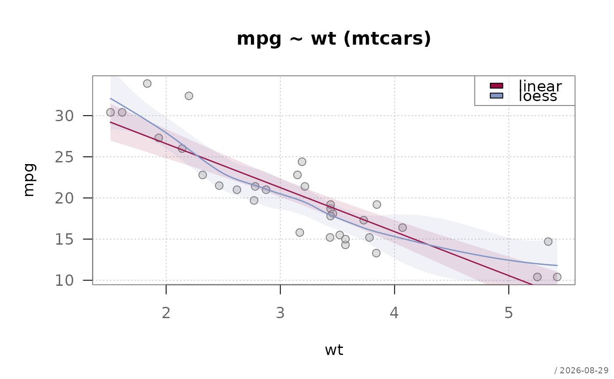
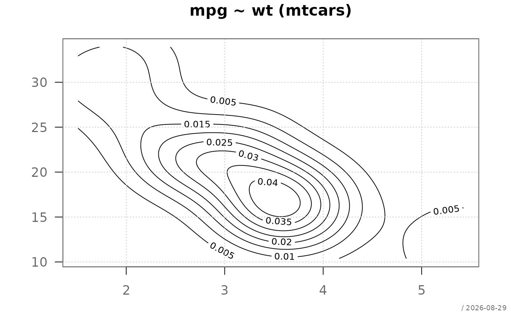
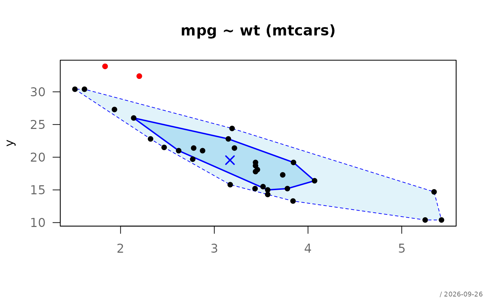

Computes, prints and plots a comprehensive bivariate description for two
quantitative variables. The function is dispatched automatically by
desc(y ~ x, data) when both y and x are numeric.
Arguments
- x
numeric predictor for
.descNN(), or an object of class"Desc.nn"for the print and plot methods- verbose
integer controlling the amount of output (1, 2, or 3).
NULL(default) falls back tox$meta$verbose %||% getOption("DescTools.verbose", 2).- abs.sty
format style for counts.
NULLfalls back togetOption("DescTools.abs.sty").- per.sty
format style for proportions.
NULLfalls back togetOption("DescTools.per.sty").- ...
further arguments passed to the underlying plot functions
- main
main title for the plot. Defaults to the title stored in
x$meta$main.- which
integer vector selecting which plots to draw. See Details.
NULL(default) selects plots automatically based onverbose.- y
numeric response variable
- conf.level
confidence level for interval estimates (default 0.95)
Value
.descNN() returns an object of class
c("Desc.nn", "Desc"). Its lm$intercept and lm$slope
components contain:
estpoint estimate of the coefficient
lcilower confidence interval bound
uciupper confidence interval bound
pp-value
The print and plot methods return x invisibly.
Details
Print output by verbose level:
verbose = 1Summary (n, missings), Pearson r and Spearman r each with confidence interval and effect size label, linear regression coefficients (estimate, CI, significance) and R².
verbose = 2(default)All of the above, plus residual standard error and Shapiro-Wilk test on residuals.
verbose = 3All of the above, plus Breusch-Pagan test for heteroscedasticity and Cook's distance summary.
Confidence intervals are reported throughout instead of standard
errors and t-values, using confint() for regression coefficients
and corCI() (Fisher z-transform) for correlations.
Effect size labels for correlations follow Cohen (1988):
negligible | |r| < 0.10 |
small | 0.10 \(\le\) |r| < 0.30 |
moderate | 0.30 \(\le\) |r| < 0.50 |
large | |r| \(\ge\) 0.50 |
Plot options via which:
which = 1Scatterplot with linear regression line and confidence band.
which = 2Scatterplot with Loess smoother and confidence band (via
lines.loess()).which = 3Residual plot: residuals vs. fitted values.
which = 4Q-Q plot of residuals.
Default which by verbose level:
verbose = 1:which = 1verbose = 2:which = 1:2verbose = 3:which = 1:4
References
Cohen, J. (1988). Statistical Power Analysis for the Behavioral Sciences (2nd ed.). Lawrence Erlbaum Associates.
Breusch, T.S. and Pagan, A.R. (1979). A simple test for heteroscedasticity and random coefficient variation. Econometrica, 47, 1287–1294.
See also
desc for the generic entry point,
desc.nq for numeric ~ categorical,
desc.qn for categorical ~ numeric,
desc.qq for categorical ~ categorical,
corCI, bpTest,
lm, cor.test
Other desc:
desc(),
desc.Date(),
desc.factor(),
desc.nq,
desc.numeric(),
desc.qn,
desc.qq,
desc.ts(),
print.Desc.qq()
Examples
# basic usage via desc()
desc(mpg ~ wt, mtcars)
#> ──────────────────────────────────────────────────────────────────────────────
#> mpg ~ wt (mtcars) (Desc.nn)
#>
#> Summary:
#> pairs: 32, valid: 32 (100.0%), missings: 0 (0.0%)
#>
#>
#> Pearson r: -0.868 (-0.934, -0.744) *** large
#> Spearman r: -0.886 (-0.943, -0.778) *** large
#>
#> Linear regression:
#> Intercept: 6.0473 ( 5.4168, 6.6777) ***
#> Slope: -0.1409 ( -0.1710, -0.1108) ***
#> R²: 0.753 adj. R²: 0.745 p: <0.001
#> Residual SE: 0.4945 on 30 df
#> Shapiro-Wilk on residuals: W = 0.919, p = 0.02
#>
 # more detail
desc(mpg ~ wt, mtcars, verbose = 3)
#> ──────────────────────────────────────────────────────────────────────────────
#> mpg ~ wt (mtcars) (Desc.nn)
#>
#> Summary:
#> pairs: 32, valid: 32 (100.0%), missings: 0 (0.0%)
#>
#>
#> Pearson r: -0.868 (-0.934, -0.744) *** large
#> Spearman r: -0.886 (-0.943, -0.778) *** large
#>
#> Linear regression:
#> Intercept: 6.0473 ( 5.4168, 6.6777) ***
#> Slope: -0.1409 ( -0.1710, -0.1108) ***
#> R²: 0.753 adj. R²: 0.745 p: <0.001
#> Residual SE: 0.4945 on 30 df
#> Shapiro-Wilk on residuals: W = 0.919, p = 0.02
#>
# more detail
desc(mpg ~ wt, mtcars, verbose = 3)
#> ──────────────────────────────────────────────────────────────────────────────
#> mpg ~ wt (mtcars) (Desc.nn)
#>
#> Summary:
#> pairs: 32, valid: 32 (100.0%), missings: 0 (0.0%)
#>
#>
#> Pearson r: -0.868 (-0.934, -0.744) *** large
#> Spearman r: -0.886 (-0.943, -0.778) *** large
#>
#> Linear regression:
#> Intercept: 6.0473 ( 5.4168, 6.6777) ***
#> Slope: -0.1409 ( -0.1710, -0.1108) ***
#> R²: 0.753 adj. R²: 0.745 p: <0.001
#> Residual SE: 0.4945 on 30 df
#> Shapiro-Wilk on residuals: W = 0.919, p = 0.02
#>

# store result and plot separately
d <- desc(mpg ~ wt, mtcars, plotit = FALSE)
print(d, verbose = 1)
#> ──────────────────────────────────────────────────────────────────────────────
#> mpg ~ wt (mtcars) (Desc.nn)
#>
#> Summary:
#> pairs: 32, valid: 32 (100.0%), missings: 0 (0.0%)
#>
#>
#> Pearson r: -0.868 (-0.934, -0.744) *** large
#> Spearman r: -0.886 (-0.943, -0.778) *** large
#>
#> Linear regression:
#> Intercept: 6.0473 ( 5.4168, 6.6777) ***
#> Slope: -0.1409 ( -0.1710, -0.1108) ***
#> R²: 0.753 adj. R²: 0.745 p: <0.001
#> Residual SE: 0.4945 on 30 df
#> Shapiro-Wilk on residuals: W = 0.919, p = 0.02
#>
plot(d, which = 1:2)

# pipe
desc(mpg ~ wt, mtcars) |> plot(which = 3)
